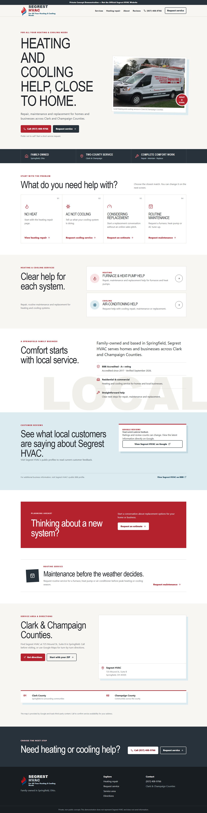
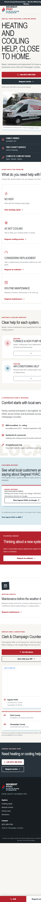

Independent developer / Web design & build
Useful websites,
carefully built.
I design and build clear, fast websites and interfaces for small businesses and teams that need the web to do a real job.
WEB / CAPABILITY

01Ø
Strategy-minded design
Responsive frontend
Custom web tools
Selected work / 02
Proof, not a catalog.
Two projects that show how I think about business clarity and application interfaces.


Responsive concept / desktop + mobile
01Website redesign concept2026
Segrest HVAC
A self-initiated concept exploring how a local service business could make the next step clearer.
ProblemImportant service paths, local context, and contact actions needed a more deliberate hierarchy.
ResponseA responsive redesign built around customer intent: identify the issue, find the right service, and choose a clear contact path.
Independent redesign proposal. Not the official Segrest HVAC website and not presented as paid client work.
Explore the concept ↗
 Application interface / conversational UX
Application interface / conversational UX
02Web application experiment2025
PersonaPal
A character-based AI chat application built to explore personality, theme, and conversation as interface material.
InterfaceCharacter selection, themed conversations, responsive chat states, and UI feedback designed as one cohesive experience.
BuildA Python/Flask application connected to the OpenAI API, showing custom software work beyond brochure sites.
Personal application project; not represented as a commercial product.
View source ↗
What I build / 03
Practical web work.
No mystery package. Just the right level of design and development for the problem.
01Business websites
Focused sites that explain what you do, establish trust, and give visitors an obvious next step.
02Redesigns
A clearer structure and stronger interface for a site that no longer represents the business well.
03Frontend & UI
Responsive, accessible interfaces built from a design or developed collaboratively from the problem.
04Lightweight tools
Landing pages, calculators, forms, API-connected experiences, and small custom web applications.
How I work / 04
Direct collaboration.
Thoughtful execution.
I’m an independent developer, so the person discussing the problem with you is also the person designing, building, testing, and refining the solution.
My software and game-development background trained me to think in systems: anticipate edge cases, make interaction feel deliberate, and keep the build maintainable after launch.
- 01
Understand
Define the audience, the job of the site, and what success actually means.
- 02
Design & build
Shape the hierarchy and interface, then turn it into a working responsive system.
- 03
Test & refine
Check real screens, interactions, accessibility, and the details people notice.
- 04
Ship
Launch cleanly with a build you can understand, maintain, and extend.